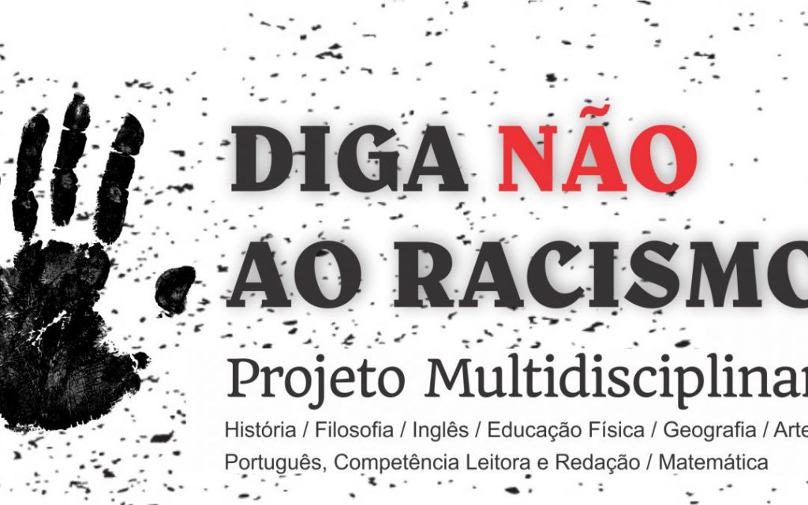
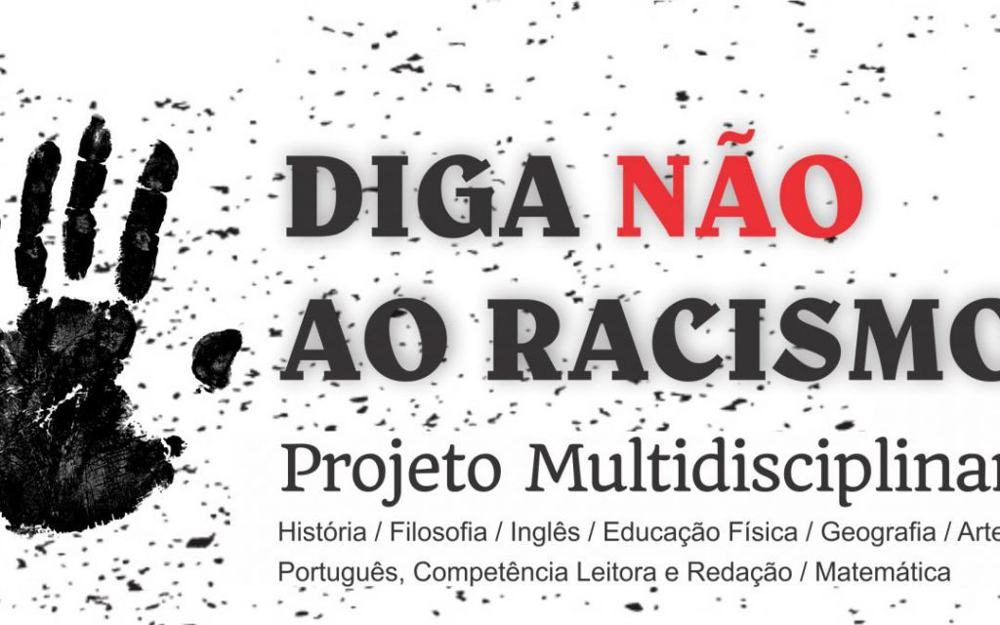

Galeria: Faces da Desigualdade
A desigualdade social no Brasil é um tema complexo, manifestando-se na distribuição de renda, acesso à educação, saúde, moradia e oportunidades. É um reflexo de disparidades históricas e estruturais.
Esta galeria reúne imagens que simbolizam o contraste social, a vulnerabilidade e a luta por direitos e justiça. As imagens servem para iniciar a reflexão e o debate.


 
